Education
Let’s save our planet
Think Climate.
Think Climate.
Think FOURCi.
Trees are nature’s lifeline — they clean our air, cool our planet, and fight climate change. Join the movement: plant a tree today for a greener tomorrow.
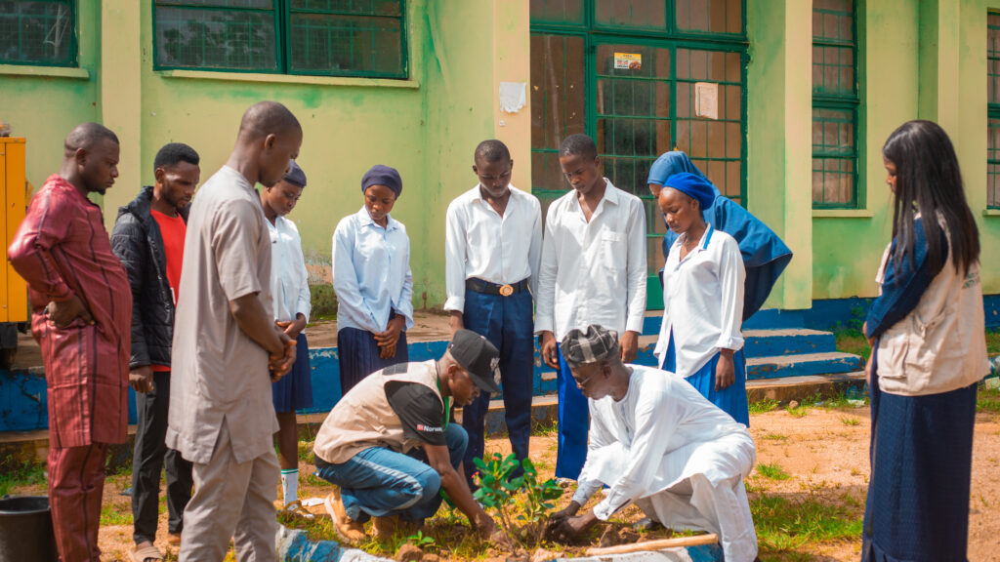
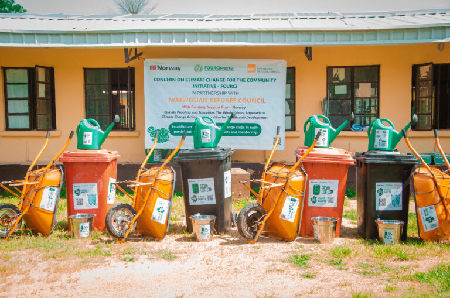
One visionAcademics, environmentalists, health & agriculture experts and volunteers, united.
Who we are
Concern on Climate Change for the Community Initiative
FOURCi is a leading non-profit organisation committed to safeguarding the environment and empowering communities to adapt, respond, and thrive in the face of climate change. We are a coalition of Academics, Environmentalists, Agricultural Experts, Health Professionals, Building and Construction Specialists, and passionate community volunteers, united in one vision: to protect our planet and secure a sustainable future for all.
We believe climate action begins within communities. Through research-driven initiatives, community-based programmes and strategic partnerships, we strengthen resilience, promote sustainable livelihoods and restore ecosystems — especially for women, youth, farmers and rural dwellers.
Our mission
To empower individuals, communities and institutions to combat climate change and disasters through sustainable practices, with a focus on involving women, young girls and children.
Our vision
A world free from climate change through sustainable practices.
Core values
How we work, every time
Every project, partnership and intervention is designed to create measurable impact for the communities we serve.
Community-led
Climate action begins within communities. We build local ownership and capacity that endures.
Evidence-driven
Scientific rigour and research guide how we design, deliver and measure our programmes.
Inclusive
Women, young girls, youth, farmers and rural dwellers are at the centre of our work.
Transparent
Open, accountable reporting so partners and communities can trust the results.
Collaborative
We work with government, development partners, civil society and traditional institutions.
What we do
Our programmes and areas of focus
From climate-smart agriculture and land restoration to WASH, advocacy, environmental education, disaster preparedness and green innovation, FOURCi drives climate justice and ensures no one is left behind.
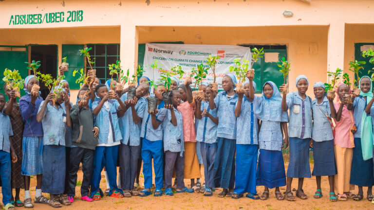
Environmental Sustainability & Afforestation
Restoring ecosystems and creating new carbon sinks through tree planting, soil restoration and community green zones.
Explore
WASH & Protection Services
Safe water, sanitation and hygiene, linked with protection and climate resilience for vulnerable households.
Explore
Sustainable Livelihoods & Climate-Smart Agriculture
Drought-resistant crops, agroforestry and regenerative farming that raise productivity while protecting the land.
Explore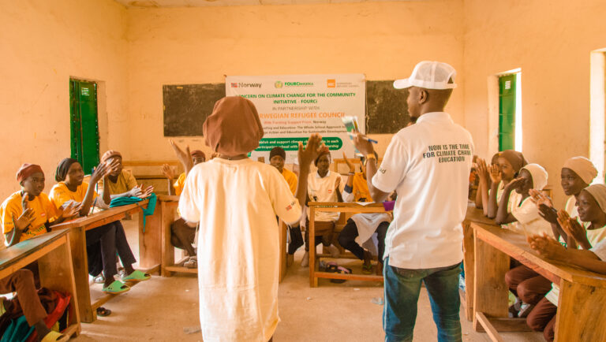
Climate Change Education & Awareness
Training farmers, local leaders, schools and youth to become champions of environmental stewardship.
ExploreOur impact
Measured in people, places and trees.
Behind every number is a community that chose to act. When floods struck Madagali and Michika in 2024, FOURCi’s trained volunteers became first-line responders — surfacing the data that guided relief.
Over 32,000 hectares of farmland destroyed and more than 5,000 people sheltering in temporary locations — captured by community volunteers through phone calls, WhatsApp and SMS.From “Standing Strong in Crisis”, September 2024 flood needs assessment

0Projects delivered
0Locations of implementation
0Beneficiaries reached
0Volunteers
Featured projects & activities
Work happening on the ground
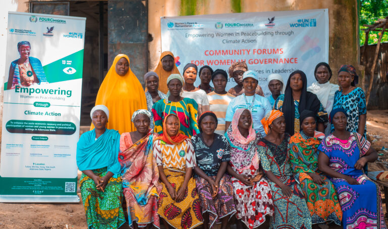
Gender & PeaceEmpowering Women in Peace-Building through Climate Action
Ask about this project Advocacy
AdvocacyWorld Environment Day, Maiduguri 2025
Ask about this projectNews & updates
Stories from the field
Standing Strong in Crisis: How Community Volunteers Led Our Flood Needs Assessment
When disaster struck Madagali and Michika LGAs in Adamawa State in September 2024, the devastation was overwhelming. Homes, farmlands, and vital infrastructure were washed away… FOURCi mobilised quickly to conduct a rapid needs assessment, led on the ground by community volunteers.
Read the storyJoin Our Vendor Community – Register & Pre-Qualify Now!
Are you ready to partner with FOURCi and contribute to meaningful change? We’re inviting suppliers and service providers to register and pre-qualify with us for upcoming opportunities in agricultural kits, tree seedlings, printing, media and catering services.
Read the storyFrequently asked questions
Good to know before we work together
Why should I choose FOURCi?
FOURCi stands at the intersection of proven environmental action and sustainable community empowerment. We are chosen by partners and communities because of our integrated approach: we believe climate resilience and human development are inseparable. Our projects are designed with scientific rigour, deep community engagement, and a commitment to long-term, measurable impact. We don’t just implement projects; we build local capacity and create adaptive systems that endure. Our track record of transparent reporting, certified methodologies, and collaborative partnerships ensures your trust and investment leads to tangible, positive change for both the planet and its people.
What types of environmental and climate-related programmes does FOURCi implement?
Our programmes are organised across three interconnected pillars.
Climate Mitigation & Carbon Projects
- Reforestation & Afforestation: restoring native ecosystems and creating new carbon sinks.
- Renewable Energy Access: deploying solar, wind, and micro-hydro solutions for off-grid communities.
- Clean Cookstove Distribution: reducing emissions and improving health by replacing open-fire cooking.
- Agricultural Carbon: promoting regenerative farming and soil carbon sequestration practices.
Climate Adaptation & Community Resilience
- Water Security: building rainwater harvesting systems, protecting watersheds, and promoting efficient irrigation.
- Sustainable Agriculture & Food Security: introducing drought-resistant crops and agroforestry systems.
- Disaster Risk Reduction: strengthening early warning systems and building climate-smart infrastructure.
- Ecosystem-based Adaptation: protecting mangroves, wetlands, and forests as natural shields against climate impacts.
Integrated Community Development
- Biodiversity & Livelihoods: community-managed conservation areas linked to sustainable income (e.g., eco-tourism, non-timber forest products).
- Climate Education & Capacity Building: training for farmers, local leaders, and youth on environmental stewardship.
- Health & Sanitation: linking WASH (Water, Sanitation, and Hygiene) projects with climate resilience.
Are FOURCi’s staff, experts, and volunteers trained and certified in their fields?
Absolutely. The competence and professionalism of our team are the foundation of our credibility and success.
- Core Staff & Project Managers hold advanced degrees in environmental science, forestry, sustainable development, and related fields. They maintain certifications in project management (e.g., PMP, PRINCE2) and specialised standards like the Gold Standard or VERRA for carbon projects.
- Technical Experts: our network includes certified agroecologists, licensed forest engineers, accredited auditors, and GIS specialists. They undergo continuous professional development to stay at the forefront of climate science and methodology.
- Field Officers & Community Facilitators are locally recruited and extensively trained in participatory methods, monitoring & evaluation (M&E), and specific technical skills (e.g., nursery management, stove installation). They often hold national vocational certifications.
- Volunteers complete a mandatory induction programme covering our code of conduct, safety protocols, and the specific context of their assignment. Skilled volunteers are matched to roles that fit their verified qualifications and experience.
We invest heavily in ongoing training and ensure all our operations adhere to international best practices and verification standards.
Partners & collaborators
Strength in partnership
We collaborate with development partners, government agencies and communities to design solutions that last.
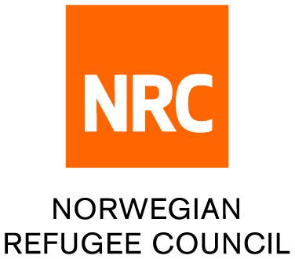
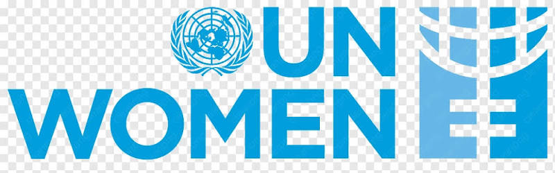
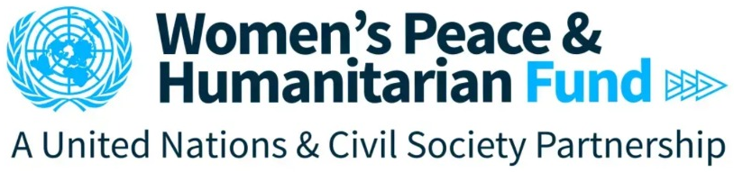
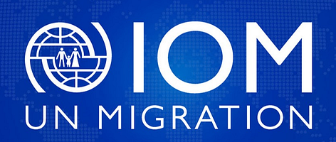
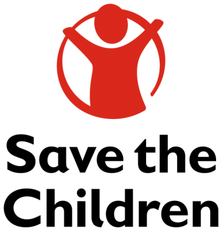
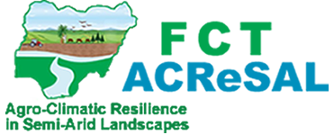
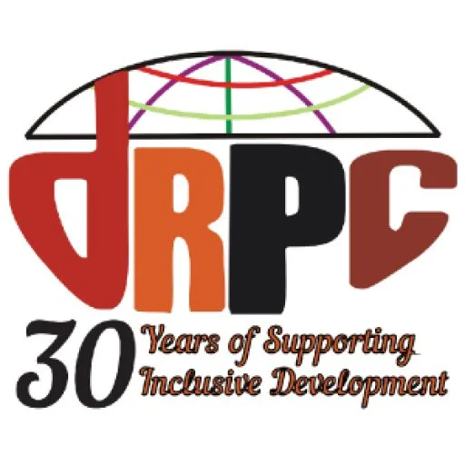
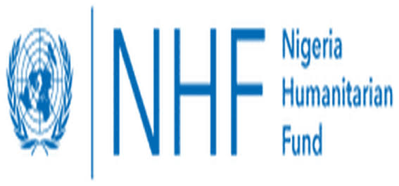
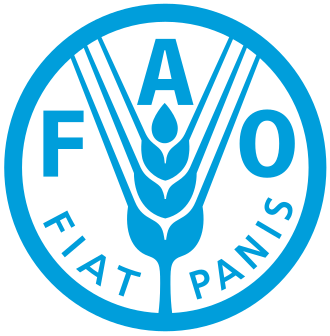
Organisations featured in FOURCi programme materials. We also work with government agencies, civil society organisations, traditional institutions and local communities.

Join forces with us to save our planet.
Whether you’re looking to volunteer, partner, or just learn more, we’re here for you.